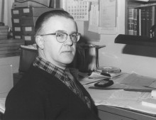

Please note: the AAS Obituaries are temporarily being hosted on this website while their full content is being ingested into the PubPub publishing platform newly adopted by the Bulletin of the American Astronomical Society. When the migration is complete, your existing links will take you to the final, migrated content. Contact peter.williams@aas.org with any questions.
Irving W. Lindenblad (1929-2011)
Irving Werner Lindenblad, graduate of Wesleyan University (Middletown, CT), Astronomer at the U.S. Naval Observatory, 1957-1989, died 11 November 2011. He was 82.
His first work at the USNO was working in and later in charge of the Solar Program making sunspot counts and determining their positions. In the mid 1960s he left this project and began what was probably his most important work at the USNO, his careful observation of the Sirius binary star system. The large magnitude difference (dV = 9.96) and close angular separation (3.”06 < < 11.”′94) of these stars have presented an observational challenge ever since the companion’s existence was ascertained from periodic proper motion errors noted by Friedrich Bessel in 1844.
Lindenblad utilized several techniques to obtain very accurate and precise relative measurements of Sirius A and B (AJ 75, 841; 1970 & AJ 78, 226; 1973). The first was the Hertzsprung photographic method, already well-established at the US Naval Observatory, in which he was an active participant (PUSNO 18, Pt. 7; 1969). Ejnar Hertzsprung developed this multiple exposure technique for observing double stars photographically around 1914 at Potsdam. The technique involved taking one or more rows of 17 to 35 exposures of a small field which normally includes only the double star itself. An important feature of the technique is the use of coarse objective gratings to substantially reduce the magnitude error by providing two symmetrically placed grating images of the primary star of approximately the same size as the image of the secondary. However, the large magnitude difference of Sirius presented special challenges. Lindenblad also utilized a hexagonal diaphragm which produced a point spread function with a six-cusped image rather than the usual Airy diffraction pattern of circular apertures. Rotation of the diaphragm allowed the companion to be placed between the “spikes” for the companion to be observed. Rather than the coarse grating of the Hertzprung method, Lindenblad used many evenly spaced extremely fine wires to produce good first-order images. These were affixed in a steel frame of mounting bars so that thermal expansion of the duraluminum hexagon was not transferred to the wires. Finally, measures were made of higher order images to measure and take into account the Ross effect, an emulsion contraction consideration. Making the observations of Sirius AB with all of these innovative techniques, the observations taken as part of this program remain the most precise ground-based measures of Sirius A and B obtained. This work led to the best current V band estimate of the brightness of Sirius B as well as (AJ 78, 205; 1973) ruling out possible higher order proper motion perturbations and periodicities (i.e., the “Dogon” companion) or (A&A 41, 111; 1975) investigating the “red” Sirius controversy.
In the mid 1970s, after the Sirius project, Lindenblad worked in the field of Earth Orientation. He made particular study of the geophysical effects of the rotation of the Earth and modeled polar motion and was in charge of the 65 cm Photographic Zenith Tube in Washington. He became interested in possible tidal effects on polar motion and the correspondence between lunar phase and seismic events such as earthquakes and volcanoes. He predicted when Mt. Saint Helens would blow and told Dennis McCarthy on the Friday (16 May 1980) before the event (18 May) that if it was going to erupt, it would be that weekend because of the phase of the Moon.
Recently, a cache of unreduced photographic plates of Sirius taken with Lindenblad’s methodology were uncovered, which yielded a total of 166 good observations of Sirius A and B obtained on 68 nights from 1970 to 1984. There is an excellent chance we may be able to improve upon the current “best” orbit of Sirius, that of van den Bos from 1960. The greatest challenge faced in this task is replicating the accuracy and precision of this excellent and careful researcher. What is clear at this point is that the results of his innovative data acquisition methodology will continue to be felt for many years to come.
Obituary written by: Brian Mason (US Naval Observatory), Jerry Josties (US Naval Observatory), Dennis McCarthy (US Naval Observatory), Alice Monet (US Naval Observatory, Retired)
Additional links:
BAAS Citation: BAAS, 2012, 44, 005